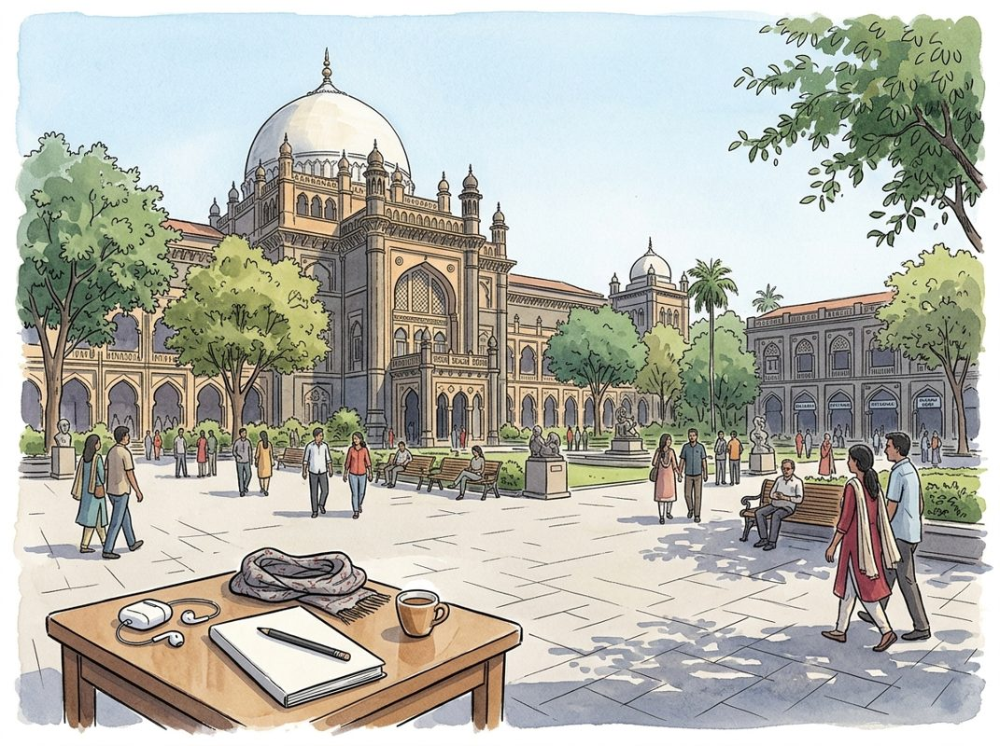

9/9

播客简报 2026-09-09
今日更新
Walter Russell Mead - How America Keeps Winning - [Invest Like the Best, EP.490]
来源：Invest Like the Best
原链接：https://colossus.com/episode/god-gold-silicon/
状态：已读网页 transcript
本期播客深入剖析了美国在全球变局中如何保持其核心力量，区分了摇摇欲坠的“美国治下的和平”（Pax Americana）与美国国家实力的内在韧性，适合所有关注地缘政治、技术变革与大国竞争的中文读者。
- 美国力量的韧性与 Pax Americana 的危机：华尔特·拉塞尔·米德（Walter Russell Mead）开宗明义地指出，当前世界正经历一个有趣的时期：自1945年建立、1990年冷战结束后重塑的“美国治下的和平”（Pax Americana）确实处于危机之中，其构建的全球网络和制度化关系正在瓦解。然而，米德强调，这并不意味着“美国力量”本身处于危机。他认为，美国作为国家的力量和影响力依然强大，只是其在全球施加影响力的方式和工具正在发生变化。这种区分至关重要，它提醒我们不能将特定历史阶段的国际秩序等同于一个国家的核心实力。美国面临的挑战是适应这种变化，而非力量的彻底衰退，这为理解当前复杂的国际局势提供了新的视角。
- 美国持续获胜的五大支柱：米德深入探讨了美国（及其前身英国）在过去几个世纪中持续取得全球优势的关键因素。他总结了美国力量的五大支柱：首先，美国拥有一个充满活力的社会，能够持续吸引全球顶尖人才和创新思想。其次，美国在地理上得天独厚，拥有两大洋的天然屏障和友好的邻国，使其能够专注于全球事务而无需担忧本土安全。第三，美国在技术和贸易的融合方面表现卓越，历史证明，掌握这一融合的国家总能在大国竞争中脱颖而出。第四，美国拥有强大的军事实力和持续的军事创新能力。最后，美国政治体系虽然面临挑战，但其内在的灵活性和适应性使其能够不断自我调整和更新。这些因素共同构成了美国在全球竞争中保持领先地位的深层基础。
- 技术与贸易的融合：历史的教训与未来：米德强调，技术与贸易的深度融合是决定大国兴衰的核心要素。从大英帝国通过航海技术和全球贸易网络崛起，到美国凭借信息技术和全球供应链主导世界，历史一再证明了这一点。他认为，一个国家若能有效驾驭技术创新，并将其转化为全球贸易和经济影响力，便能掌握战略主动权。当前，人工智能、生物技术等前沿科技的突破，正再次重塑全球力量格局。美国在这些领域的领先地位，以及其将技术成果商业化并融入全球经济的能力，是其对抗中国等新兴大国挑战的关键优势。这种融合不仅关乎经济繁荣，更直接影响军事实力和地缘政治影响力，是理解未来大国竞争的关键视角。
- 个体崛起与机构衰落：特朗普现象的深层解读：米德观察到，世界正在从由机构主导转向由个体主导的趋势。他以唐纳德·特朗普为例，指出特朗普的权力运作方式正是这种个体力量崛起的体现——他绕过传统机构，直接通过媒体和社交平台与民众沟通，以个人魅力和意志推动议程。这种现象不仅限于政治领域，在商业、文化等领域也日益显著。传统机构的权威和影响力正在被削弱，而具有强大个人号召力的领导者或创新者则能迅速聚集力量。这一趋势对全球治理、社会稳定乃至民主制度都构成了深刻挑战，因为它可能导致决策过程的碎片化和不可预测性，同时也为颠覆性变革提供了土壤。
- 美国外交政策的演变与“科技汉密尔顿主义”：米德回顾了美国外交政策的四大传统流派：汉密尔顿主义（强调商业利益和强大中央政府）、杰斐逊主义（强调民主、有限政府和避免对外干预）、杰克逊主义（强调民粹、荣誉和军事力量）和威尔逊主义（强调传播民主和国际机构）。他指出，当前美国正见证一种新的融合——“科技汉密尔顿主义”的兴起。这一流派结合了汉密尔顿主义对经济和技术实力的重视，以及对全球商业霸权的追求，但其工具和手段则深深植根于现代科技。这意味着美国将继续利用其在科技领域的优势，通过贸易、投资和技术标准来塑造全球秩序，而非仅仅依赖传统军事或外交手段。这种演变反映了时代的变化，也预示着美国未来外交政策的走向。
历史精选
TSMC Founder Morris Chang
来源：Acquired
原链接：https://www.acquired.fm/episodes/tsmc-founder-morris-chang
状态：已读网页 transcript
这期播客深入访谈了台积电（TSMC）创始人张忠谋，揭示了这家全球半导体巨头在关键时刻的决策智慧、对客户关系的深刻理解以及对技术和人才的坚定投入。它不仅适合对半导体产业、商业战略和企业领导力感兴趣的听众，也为所有面临重大商业抉择的创业者和管理者提供了宝贵的经验。
- 与NVIDIA的缘起：从一封信到战略伙伴：张忠谋与英伟达（NVIDIA）创始人黄仁勋的合作始于1997年黄仁勋的一封信。当时英伟达是一家濒临破产、仅有50-60名员工的小公司，其在台积电圣何塞办事处寻求代工未果后，直接写信给张忠谋。张忠谋对此既好奇又有些不满，因为他一直强调不应忽视任何潜在客户。他亲自联系黄仁勋，并被其清晰的表达和乐观精神所打动。黄仁勋大胆预言，英伟达的芯片不仅能挽救公司，还将使其成为台积电的主要客户。事实证明，这款游戏芯片（RIVA 128）大获成功，英伟达在两三年内便跻身台积电前五大客户之列，奠定了双方长达数十年的深厚合作关系。
- 2009年危机：张忠谋的回归与裁员风波：2009年，台积电面临多重危机：40纳米节点良率和质量问题导致客户（尤其是NVIDIA）蒙受损失；产品定价下降速度快于成本，毛利率持续下滑；以及前任CEO在2008年金融危机期间，以绩效不佳为由裁员600-700人，引发员工抗议。张忠谋认为，裁员是缺乏经验的管理者在危机中的“膝跳反应”，且绩效评估具有高度主观性，不应作为裁员依据。他曾试图阻止，但前任CEO规避了董事会。面对内外交困，张忠谋决定重新出任CEO，将解决这些问题列为首要任务。他承诺重新雇用被裁员工，并着手处理与客户的纠纷。
- 化解NVIDIA纠纷：信任与果断的领导力：张忠谋回归后，将近一半的时间用于解决与NVIDIA的纠纷。他深入了解问题细节，并与黄仁勋保持友好沟通。在一次私人晚餐后，张忠谋向黄仁勋提出了一个超过1亿美元的赔偿方案，并设定了48小时的接受期限，否则将诉诸仲裁。他认为这个数字是经过周密计算，对双方都公平的。黄仁勋在两天内接受了提议。这次事件不仅解决了眼前的危机，更巩固了台积电与NVIDIA的伙伴关系，展现了张忠谋在关键时刻的果断决策、对客户的责任感以及通过个人信任化解商业冲突的能力。此后，双方的合作规模达到了数百亿美元。
- 28纳米的“甜点”：研发与资本的豪赌：在解决40纳米问题后，台积电将目光投向28纳米节点。张忠谋吸取了在德州仪器（TI）研发投入受限的教训，将台积电的研发预算固定为营收的8%，无论经济好坏，这极大地鼓舞了研发团队。研发人员预言28纳米将是市场的“甜点”。基于市场预测、研发团队的信心和业务发展部门的战略分析，张忠谋决定在2010年将资本支出从每年20-25亿美元大幅提升至近60亿美元，押注28纳米。这一决定在董事会引发了强烈质疑，但张忠谋坚持己见，引用莎士比亚名言“事有凑巧，乘潮而上，一举成功”，最终说服董事会放手一搏。这一战略性投入恰逢智能手机时代兴起，使台积电在先进工艺领域确立了领先地位。
- 苹果的意外之喜与20纳米的挑战：2010年末，苹果公司通过郭台铭（张忠谋妻子的表亲）主动接触台积电，寻求代工合作。这对于台积电来说是一个巨大的“意外之喜”，因为他们此前并未将苹果纳入28纳米的规划。苹果首席运营官Jeff Williams在首次会面时，直接提出了代工需求，并表示愿意提供40%的毛利率（当时台积电已达45%）。然而，苹果希望台积电开发20纳米工艺，而非台积电计划中的28纳米之后的16纳米。20纳米是一个“半步”节点，意味着台积电需要投入大量资源进行计划外的研发和资本支出，这无疑是一个巨大的挑战和“弯路”。
CompoSecure: Heavy Metal - [Business Breakdowns, EP.232]
来源：Business Breakdowns
原链接：https://joincolossus.com/episode/composecure-heavy-metal/
状态：已读网页 transcript
这期播客深入剖析了CompoSecure这家在高端金属支付卡领域占据主导地位的利基公司，并探讨了其如何通过创新、战略性扩张（尤其是进入数字资产安全领域Arculus），以及在传奇并购专家Dave Cote的领导下，构建独特的企业结构和增长引擎。它适合对利基市场垄断、企业转型、以及并购策略感兴趣的投资者和商业分析师。
- CompoSecure：高端金属支付卡的隐形巨头：CompoSecure是一家专注于制造高端金属支付卡的领先企业，其产品广泛应用于全球各大银行发行的顶级信用卡。播客指出，如果你口袋里有一张金属信用卡，它很可能就出自CompoSecure之手，这凸显了公司在该领域的市场主导地位。公司通过提供卓越的制造工艺和差异化的产品，成功地在一个看似小众的市场中建立了强大的护城河。这种利基市场的垄断地位，使得CompoSecure能够享受较高的利润率和稳定的客户关系，成为金融科技供应链中一个不可或缺的环节。主持人Matt Reustle也披露了他个人持有CompoSecure的股票，这表明了对公司商业模式的认可，尽管他强调这并非投资建议。
- 优质金属卡的崛起与CompoSecure的创新之路：CompoSecure的起源故事与信用卡行业的演变紧密相连。随着消费者对支付体验和身份象征的需求提升，银行开始推出更具质感和高级感的金属信用卡。CompoSecure正是抓住了这一趋势，通过持续的技术创新和工艺改进，成为金属卡制造领域的先行者和领导者。公司不仅提供基础的金属卡片制造，还涉及复杂的嵌入技术、安全特性以及定制化设计，满足了发卡机构对品牌形象和用户体验的严苛要求。这种对产品质量和创新能力的专注，使其在竞争中脱颖而出，并推动了整个高端支付卡市场的发展，巩固了其不可替代的地位。
- SPAC上市与数字资产安全新引擎Arculus：在经历了一段时期的发展后，CompoSecure选择通过SPAC（特殊目的收购公司）的方式上市，这为公司带来了新的增长机遇和资本。更重要的是，公司利用此次契机，战略性地将业务拓展到数字资产安全领域，推出了名为Arculus的产品。Arculus旨在为数字钱包和加密货币提供物理级的安全存储解决方案，这代表了CompoSecure从传统支付卡制造向更广阔的数字安全领域的跨越。这一举措被视为公司未来的重要增长引擎，旨在抓住数字经济时代对资产安全日益增长的需求，为公司打开了全新的市场空间，实现业务的多元化发展。
- Dave Cote的战略影响与Resolute Holdings模式：自2024年起，传奇的并购专家Dave Cote的加入对CompoSecure产生了深远影响。Cote以其在霍尼韦尔（Honeywell）等公司卓越的并购整合能力和构建控股公司的独特方法而闻名。他将这种经验带到了CompoSecure，通过Resolute Holdings的结构，旨在优化公司的资本配置和长期价值创造。这种模式通常涉及对多元化业务的战略性管理和协同效应的挖掘，预示着CompoSecure未来可能通过并购进一步巩固其市场地位或拓展新的业务线。Cote的参与不仅带来了资本市场的关注，更重要的是，为公司注入了成熟的战略思维和执行力，有望加速其增长步伐。
- 财务表现与双轮驱动的增长潜力：尽管播客材料未提供具体的财务数据，但提及了CompoSecure的“财务表现和市场地位”，暗示了其稳健的运营状况。作为高端金属卡市场的领导者，公司通常享有较高的毛利率和稳定的现金流。而Arculus数字资产安全业务的加入，则为公司提供了第二个增长曲线。这种“传统核心业务+新兴增长业务”的双轮驱动模式，使得CompoSecure在保持现有市场优势的同时，能够积极布局未来，降低单一业务的风险。投资者关注的焦点在于，Arculus能否成功复制金属卡业务的成功，成为公司新的利润增长点，从而驱动整体价值的提升。